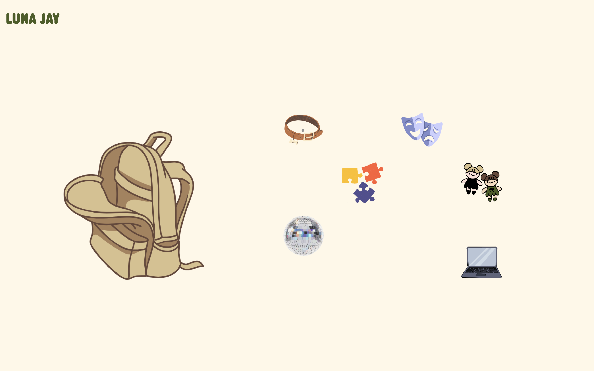
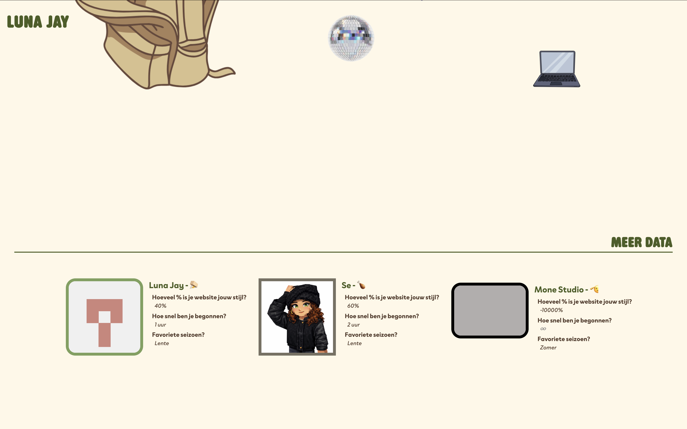
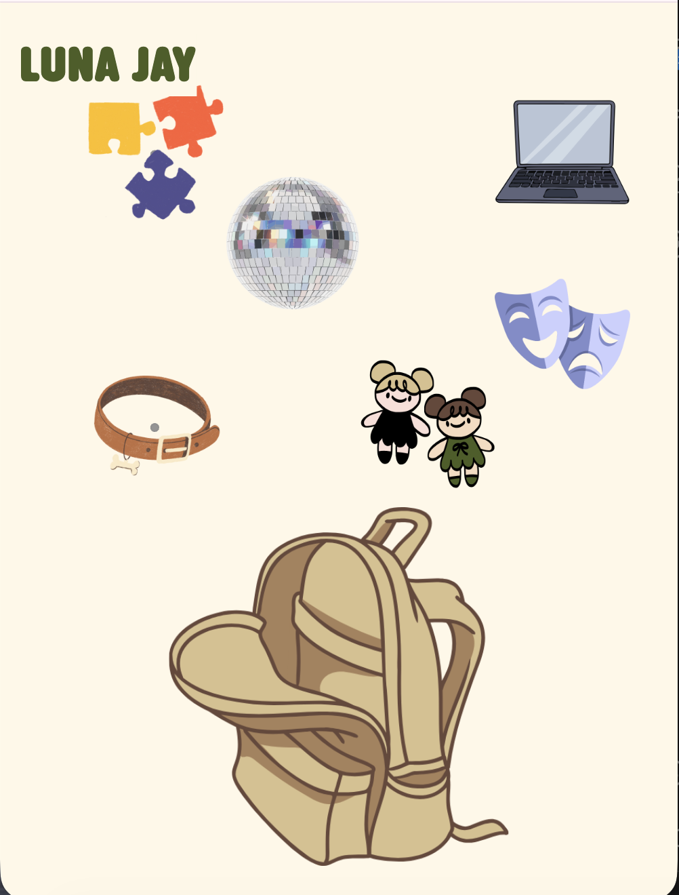
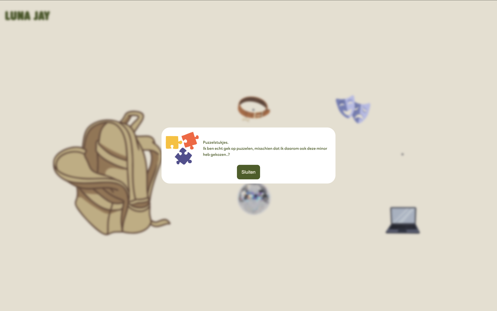

De opdracht


Sprint 0 was de eerste website die ik maakte voor de minor, en dat in anderhalve week. Het doel was om mijn leerdoelen te presenteren en iets van mezelf te laten zien. Wat ik fijn vond was dat ik gelijk kon beginnen met het toepassen van dingen die ik wilde leren, het voelde meteen praktisch. Ik heb veel nieuwe CSS geleerd waar ik daarvoor nog nooit mee had gewerkt, zoals scroll animations en anchor positioning. Dat waren technieken die ik zelf had opgezocht en uitgekozen, en dat maakte het extra leuk om mee te werken. Ik merkte ook dat ik voor het eerst echt nadacht over wat mijn eigen stijl zou kunnen worden als ontwerper. Ik had daar graag meer tijd voor gehad, want anderhalve week gaat eigenlijk best snel als je ook nog aan het leren bent.

Wat zou ik anders doen
Als ik het opnieuw zou doen zou ik meer tijd reserveren voor het uitwerken van de stijl, en misschien vooraf een kleine schets maken van hoe ik wil dat het eruit ziet. Nu voelde het soms wat zoekend, en ik denk dat een beetje meer voorbereiding dat had kunnen voorkomen.
